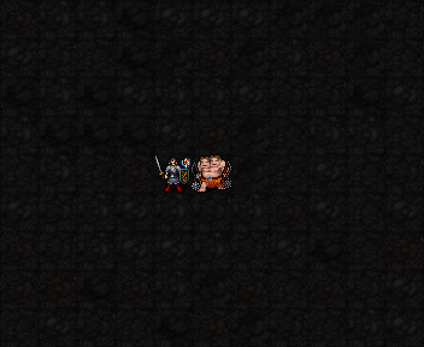

신앙30 해금 / 최소 기도술 제한 없음 / 상시 패시브·무료 설정

현재 캐릭터 오른쪽 위 작은 불꽃은1성 가호의 기존 표시입니다. 열기 획득이나 추가타 발동을 보여주는 장면은 아닙니다. 이전 night-vfx04 실제SDL 상태 캡처를 다시 꺼낸 참고 화면이며 새 촬영본이 아닙니다.
| 항목 | 효과 |
|---|---|
| 화염 저항 | 상시 rF+1단계. 장비·종족 저항과 합산 |
| 열기 | 최대6. 유효 적 공격에 맞거나 방패로 막으면+1, 적 화염 공격·화염 지속피해면 대신+2. 적 원천 획득은1턴 구간 합계 최대2 |
| 불씨 반격 | ON 상태에서 다음 일반 직접 공격이 기본 피해를 주면 열기1을 소비해 주대상에게1d(3+⌊I/6⌋) 추가 화염. I12:1d5·평균3. AC무시·rF적용 |
| 적용 공격 | 근접·맨손·사격·투척·직접 피해 주문. 시전/행동당 주대상1명·1회. 소환수·지속피해 제외 |
| 설정 | 무료 무턴 ON/OFF. 열기를3성 역분사용으로 저장할 때OFF |
| 감쇠 | 마지막 획득 후3턴 유지, 이후2턴마다1 감소. 층 이동·배교 시 제거 |
기존 수치와 전투 코드는 이번 전환에서 바꾸지 않았습니다. 사용자 지정 미술 방향은 푸른 도깨비불. 현재는 기존1성 표시를 검토하며 열기 수치 구분과 반격 타격 연출은 이후 보강 대상입니다. 소피아는1·3·5성 외형 승인 완료지만 새캐스터 전투는 미구현, 일반실행본su-five01유지.